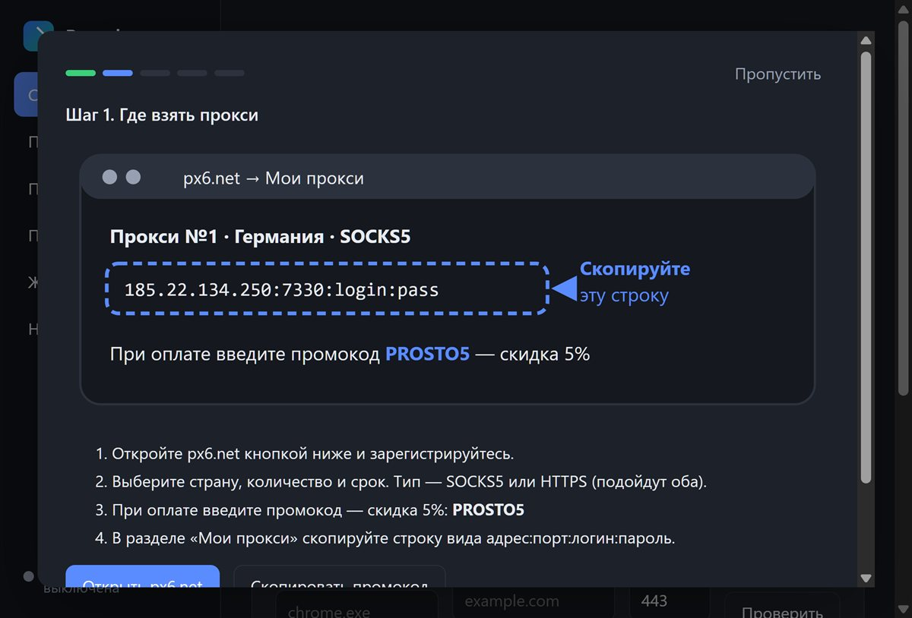
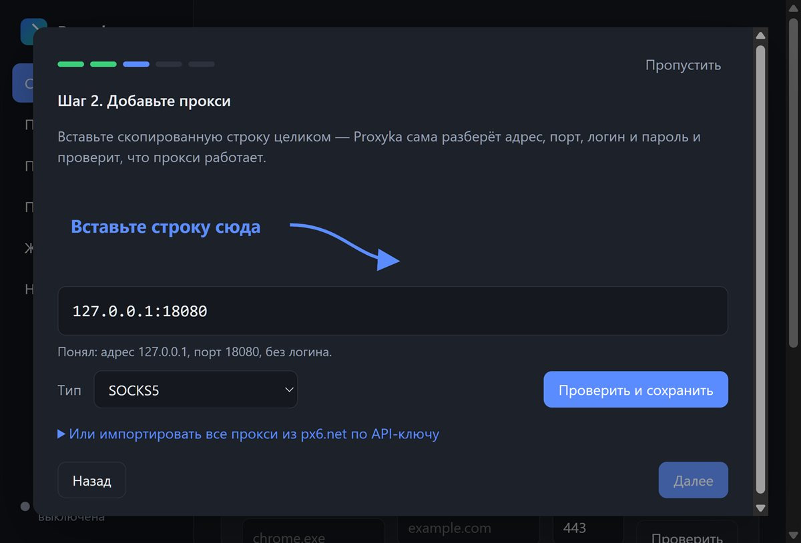
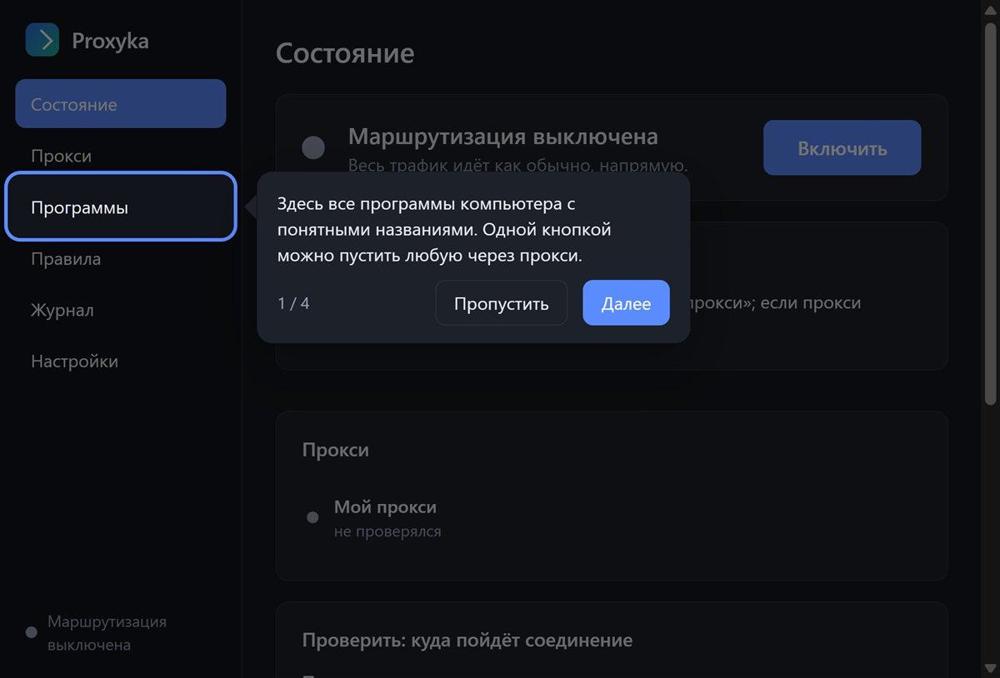

Proxyka направляет выбранные программы Windows через ваш SOCKS5 или HTTP прокси: браузер — через другую страну, Telegram — через прокси, а банк и игры — как обычно.
Скачать для Windows Как это работаетWindows 10 и 11, 64-бит · бесплатно · русский и английский язык

Откройте скачанный Proxyka-Setup.exe. Если Windows покажет «Система Windows защитила ваш компьютер» — нажмите «Подробнее» → «Выполнить в любом случае».
В окне «Разрешить этому приложению вносить изменения?» нажмите «Да» — права нужны, чтобы установить сетевой компонент.
Нажмите «Установить». Proxyka откроется сама и пошагово покажет, куда вставить прокси и что через него пускать.
Безопасно: Proxyka не меняет сетевые настройки Windows. Перехват работает, только пока программа запущена — выход из неё возвращает всё как было. Удаление (Параметры → Приложения) убирает службу, драйвер, правило брандмауэра и автозапуск.
Например, на px6.net. При оплате введите промокод PROSTO5 — скидка 5%. Скопируйте строку адрес:порт:логин:пароль.
Proxyka сама разберёт адрес, порт, логин и пароль и проверит, что прокси работает и открывает интернет.
Весь трафик компьютера или только нужные программы. Нажмите «Включить» — готово.
Список запущенных программ с понятными названиями и значками: видно, кто куда подключается. Одна кнопка — и программа идёт через прокси.
Правила по доменам (сайт и все поддомены), IP-адресам, подсетям и портам. Проверяются сверху вниз.
Если прокси упал — соединение блокируется, а не уходит напрямую. UDP (QUIC) программ, идущих через прокси, блокируется.
Основной сервер недоступен — Proxyka сама переключится на запасной.
Вставьте API-ключ — все купленные прокси добавятся сами, со сроками действия и напоминанием об окончании.
Видно, какое правило сработало и почему. Вопрос разработчику — прямо из программы.


Реклама. px6.net
| Proxyka | Обычный VPN | Proxifier | |
|---|---|---|---|
| Только выбранные программы | ✓ | — | ✓ |
| Ваши собственные прокси | ✓ | — | ✓ |
| Русский интерфейс и мастер настройки | ✓ | по-разному | — |
| Импорт прокси из px6.net | ✓ | — | — |
| Цена | бесплатно | подписка | платная лицензия |
Установите Proxyka, добавьте прокси (вставьте строку адрес:порт:логин:пароль), откройте раздел «Программы» и нажмите «Через прокси» напротив нужной программы. Остальные программы продолжат работать напрямую.
В разделе «Программы» найдите Telegram и нажмите «Через прокси». Если трафик Telegram не идёт — проверьте журнал: там видно, какое правило сработало.
VPN пускает весь трафик компьютера через один сервер. Proxyka работает с вашими прокси и позволяет выбрать, какие программы, сайты и порты идут через прокси, а какие напрямую.
Да, Proxyka решает ту же задачу — маршрутизацию программ через прокси по правилам, — но проще в настройке, на русском языке и с импортом прокси из px6.net.
SOCKS5 и HTTP(S) прокси с логином и паролем или без. Можно указать резервный прокси на случай сбоя основного.
Вы сами выбираете: заблокировать соединение (трафик не уйдёт в обход прокси), пустить напрямую или переключиться на резервный прокси.
Откройте в браузере 2ip.ru — там будет адрес и страна прокси. В журнале Proxyka видно каждое соединение и выбранный путь.
Например, на px6.net — индивидуальные прокси разных стран. По промокоду PROSTO5 скидка 5%. Proxyka умеет импортировать купленные там прокси по API-ключу.
Пароли от прокси хранятся зашифрованными средствами Windows и не попадают в журналы. Обновления подписаны цифровым ключом: подделанное обновление программа не установит.